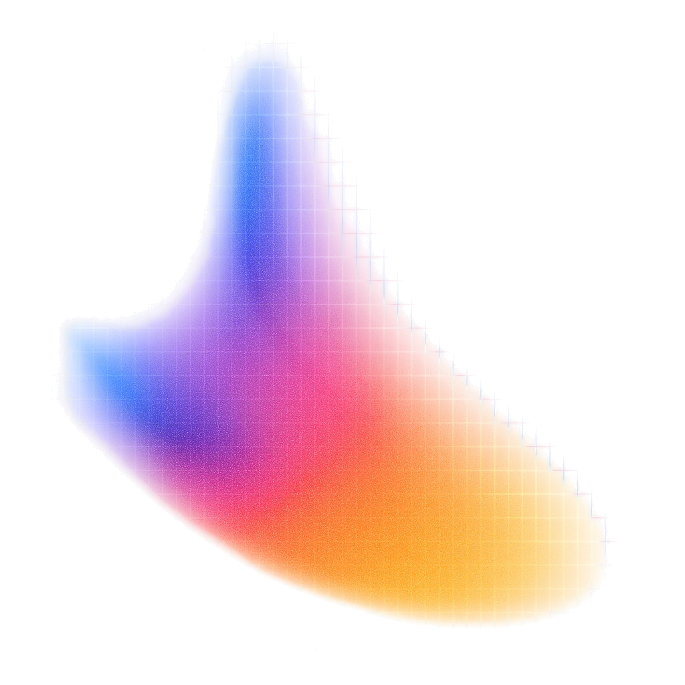
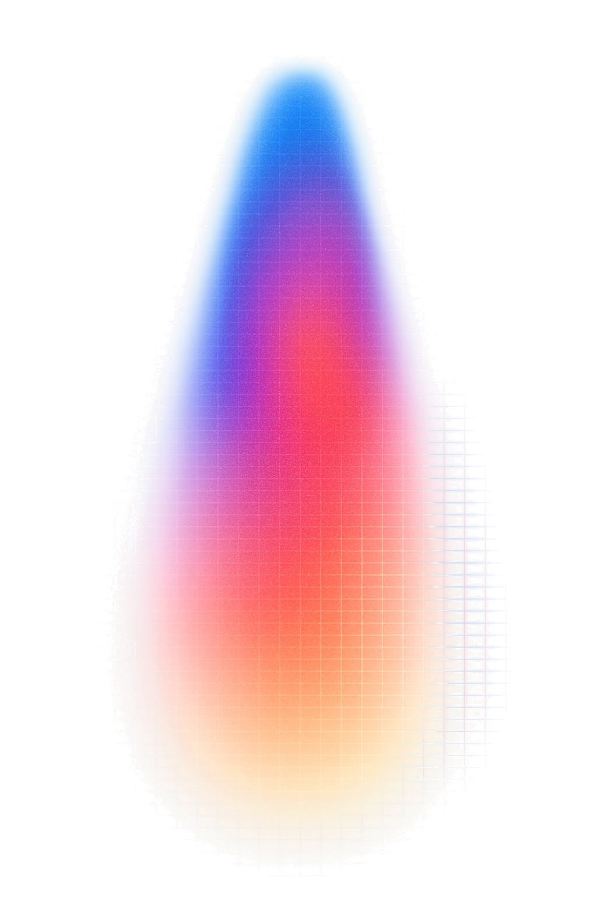

Tokens en kosten
Wat kost één run, en wat levert hij op?
Om 13:30 heb je
Klaar om te starten?
slides, uitlegwww.advancedai.wiki
Niet Fable of Astra!
Open je AI in je eigen map. Typ:
Week 3 nog aanvullen? Kan tot vrijdag 23:59, met een nieuwe pull request.

Jouw cijfer van week 3?
En wat kostte die run?
Raad de prijs.
A minder dan 1 cent · B 1 cent tot $1 · C meer dan $1
Handen omhoog. Eén keer per taak.
Van een fractie van een cent tot $2.000.
Je betaalt per token.
Wat je erin stopt, en wat eruit komt. Apart geteld, apart betaald.
USD per miljoen tokens, 14 okt 2026
Output kost 5× meer dan input.
En je betaalt ook het denkwerk dat je niet ziet.
tokens
tokens, onzichtbaar
Mijn prompt: ± 300 tokens.
Hoeveel tokens gaan er naar het model?
33.314 tokens.
Ik schreef er 300.
/cost telt dit voor je op.
Elke vraag reist in een context.
Zelfde vraag. Andere prijs.
De eerste run schrijft de context in een cache. De volgende leest ze terug, voor een tiende van de prijs.
Haiku en Opus 14 okt · Sonnet 13 okt
Jouw deel = totaal − context.
× de API-prijs = je kost per run, voor je memo.
Meet je eigen run.
Nieuwe sessie, in je eigen map, met Haiku.
Noteer de som in build/kosten.md.
= de context
= totaal. Totaal − context = jouw deel
Codex: /status toont tokens. Dollars: × de GPT-prijs.

Snoei je prompt: −30% tokens.
Zelfde testset. Zelfde succespercentage. Lukt het niet? Ook dat is een bevinding.

Checkpoint: tokens
Twee getallen. Je context en jouw deel.
Op schaal betaalt een bedrijf per token.
Je betaalt $200 per maand.
Hoeveel aan API-tokens kan je daarmee opgebruiken?
Je abonnement is een korting.
Bron: SemiAnalysis, 'Anthropic Subscriptions Offer 5x+ More Value Than OpenAI', 5 okt 2026
/cost toont de API-prijs.
Uber: het AI-budget van 2026 was op in vier maanden.
Bron: Forbes, 17 mei 2026
Jij bent de CFO van Uber.
Het is mei. Het budget is op. Wat doe je?
Kies één. Verdedig het in één zin.
"Terug naar de tekentafel."
Bron: Forbes, 17 mei 2026
3.000 mails per maand.
Wat kost de mailsorteerder?
Koers: dollar × 0,9, afgerond. Aanname.
Wat kost jouw tool per maand?
Checkpoint: kosten
Eén getal. Per maand, bij jouw volume, jouw deel, in euro.
Hoe lang duurt het met de hand?
Van seconden naar een jaar.
Mailsorteerder · 150 mails per dag
Uurkost €45: aanname, check je bron.
En als je zwakste getal fout is?
Reken je eigen keten.
Elk getal met een bron. 'Geschat' mag, als je het zo noemt.
In je post. Later in je memo.
Checkpoint: de keten
Netto per jaar. En je zwakste getal.
Pauze
Na de pauze: je memo-scenario in vijf lijnen.
Je memo in vijf lijnen.
Lijn 2 moet een ja of een nee kunnen krijgen.
Veranderen kan gratis tot week 7.
Reflectie 1: een halve pagina.
Met één gemeten cijfer erin. Aparte commit.
Thuis, vóór dinsdag 20 oktober.
Checkpoint 1: zo kijk ik je Build na. 5% van je cijfer.
10 op 10? Voeg eerst drie moeilijke inputs toe en draai opnieuw. Moeilijk = dubbelzinnig, andere taal, heel kort, of 'onzeker' is juist.
Tegen dinsdag 20 oktober, 23:59
Week 3 aanvullen kan nog tot vrijdag 16 oktober, met een nieuwe pull request.